公历：2016年1月8日9时30分，星期五。
农历：乙未年 十一月 廿九日
神煞：驿马-亥 桃花-午 干禄-午 贵人-子、申
干支：乙未年 己丑月 己丑日 己巳时 (卦身：未)
主变卦 地泽临(坤宫) 之 山泽损(艮宫) [空亡:午、未]
勾陈 ▅▅ ▅▅×子孙癸酉金 ▅▅▅▅▅ 官鬼丙寅木 应
朱雀 ▅▅ ▅▅ 妻财癸亥水 应 ▅▅ ▅▅ 妻财丙子水
青龙 ▅▅ ▅▅ 兄弟癸丑土 ▅▅ ▅▅ 兄弟丙戌土
玄武 ▅▅ ▅▅ 兄弟丁丑土 ▅▅ ▅▅ 兄弟丁丑土 世
白虎 ▅▅▅▅▅ 官鬼丁卯木 世 ▅▅▅▅▅ 官鬼丁卯木
螣蛇 ▅▅▅▅▅ 父母丁巳火 ▅▅▅▅▅ 父母丁巳火
主帖标题: 2017年2月大盘涨跌卦
占事：2017年2月大盘涨跌？
公历起卦时间：2017年1月26日16时30分 (手工指定)
干支：丙申年 辛丑月 癸丑日 庚申时 （日空：寅卯）
神煞：驿马－亥 桃花－午 日禄－子 贵人－卯，巳
坤宫：地泽临 艮宫：山泽损
六神 伏神 本 卦 变 卦
白虎 子孙癸酉金 ▅▅ ▅▅ ╳→ 官鬼丙寅木 ▅▅▅▅▅ 应
腾蛇 妻财癸亥水 ▅▅ ▅▅ 应 妻财丙子水 ▅▅ ▅▅
勾陈 兄弟癸丑土 ▅▅ ▅▅ 兄弟丙戌土 ▅▅ ▅▅
朱雀 兄弟丁丑土 ▅▅ ▅▅ 兄弟丁丑土 ▅▅ ▅▅ 世
青龙 官鬼丁卯木 ▅▅▅▅▅ 世 官鬼丁卯木 ▅▅▅▅▅
玄武 父母丁巳火 ▅▅▅▅▅ 父母丁巳火 ▅▅▅▅▅
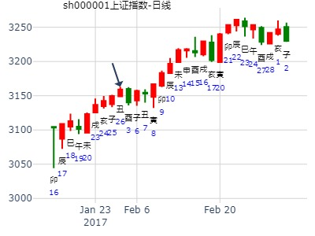
主帖标题: 浅谈2.25日大盘走势
2011年 2月 24日 15时 0分 (起卦方式：手动指定)
干支：辛卯年 庚寅月 庚戌日 甲申时 日空亡：寅卯
神煞：驿马－申 桃花－卯 日禄－申 贵人－丑，未
坤宫：地泽临 艮宫：山泽损
六神 伏神 本 卦 变 卦
螣蛇 子孙酉金 ▅▅ ▅▅ ╳→ 官鬼寅木 ▅▅▅▅▅ 应
勾陈 妻财亥水 ▅▅ ▅▅ 应 妻财子水 ▅▅ ▅▅
朱雀 兄弟丑土 ▅▅ ▅▅ 兄弟戌土 ▅▅ ▅▅
青龙 兄弟丑土 ▅▅ ▅▅ 兄弟丑土 ▅▅ ▅▅ 世
玄武 官鬼卯木 ▅▅▅▅▅ 世 官鬼卯木 ▅▅▅▅▅
白虎 父母巳火 ▅▅▅▅▅ 父母巳火 ▅▅▅▅▅
主帖标题: T-Z-D上证指数擂台赛第八场第4局（2020年2月27日）Z方
公历起卦时间：2020年2月27日9时2分 (手工指定)
干支：庚子年 戊寅月 庚子日 辛巳时 （日空：辰巳）
神煞：驿马－寅 桃花－酉 日禄－申 贵人－丑，未
坤宫：地泽临 艮宫：山泽损
六神 伏神 本 卦 变 卦
螣蛇 子孙癸酉金 ▅▅ ▅▅ ╳→ 官鬼丙寅木 ▅▅▅▅▅ 应
勾陈 妻财癸亥水 ▅▅ ▅▅ 应 妻财丙子水 ▅▅ ▅▅
朱雀 兄弟癸丑土 ▅▅ ▅▅ 兄弟丙戌土 ▅▅ ▅▅
青龙 兄弟丁丑土 ▅▅ ▅▅ 兄弟丁丑土 ▅▅ ▅▅ 世
玄武 官鬼丁卯木 ▅▅▅▅▅ 世 官鬼丁卯木 ▅▅▅▅▅
白虎 父母丁巳火 ▅▅▅▅▅ 父母丁巳火 ▅▅▅▅▅
《周易》——地泽临 坤上兑下
临：元，亨，利，贞。 至于八月有凶。彖曰：临，刚浸而长。 说而顺，刚中而应，大亨以正，天之道也。 至于八月有凶，消不久也。象曰：泽上有地，临； 君子以教思无穷，容保民无疆。
上六：敦临，吉无咎。象曰：敦临之吉，志在内也。
主帖标题: 3月11--15，A趋...
出生年：年 性别：男 占事: 3月11--15，A 趋.........
起卦方式：手动摇卦 公历时间：2013年3月9日13时2分
农历时间：癸巳年 正月二十八日未时
干支：癸巳年 乙卯月 甲戌日 辛未时
旬空：午未 子丑 申酉 戌亥
坤宫：地泽临 艮宫：山泽损
六神 【本 卦】 【变 卦】
玄武 ▄▄ ▄▄ 子孙癸酉金 X-> ▄▄▄▄▄ 官鬼丙寅木 应
白虎 ▄▄ ▄▄ 妻财癸亥水 应 ▄▄ ▄▄ 妻财丙子水
螣蛇 ▄▄ ▄▄ 兄弟癸丑土 ▄▄ ▄▄ 兄弟丙戌土
勾陈 ▄▄ ▄▄ 兄弟丁丑土 ▄▄ ▄▄ 兄弟丁丑土 世
朱雀 ▄▄▄▄▄ 官鬼丁卯木 世 ▄▄▄▄▄ 官鬼丁卯木
青龙 ▄▄▄▄▄ 父母丁巳火 ▄▄▄▄▄ 父母丁巳火
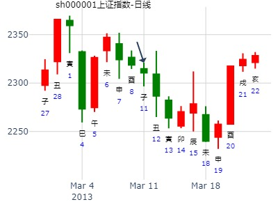
上证指数3月份
时间: 2019-03-01 13时20分
干支: 己亥年丙寅月丁酉日 (旬空: 辰巳 )
地泽临 山泽损
六神 伏神 本 卦 变 卦
青龙 ▅▅ ▅▅ 子孙酉金 Ｘ→ ▅▅▅▅▅ 官鬼寅木 应
玄武 ▅▅ ▅▅ 妻财亥水 应 ▅▅ ▅▅ 妻财子水
白虎 ▅▅ ▅▅ 兄弟丑土 ▅▅ ▅▅ 兄弟戌土
腾蛇 ▅▅ ▅▅ 兄弟丑土 ▅▅ ▅▅ 兄弟丑土 世
勾陈 ▅▅▅▅▅ 官鬼卯木 世 ▅▅▅▅▅ 官鬼卯木
朱雀 ▅▅▅▅▅ 父母巳火 ▅▅▅▅▅ 父母巳火
上六：敦临，吉无咎。
2019-03-01
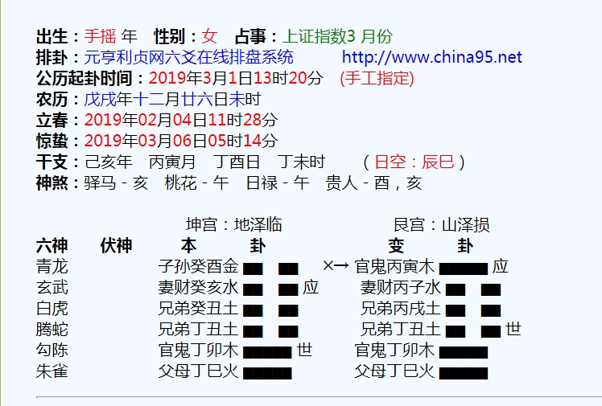
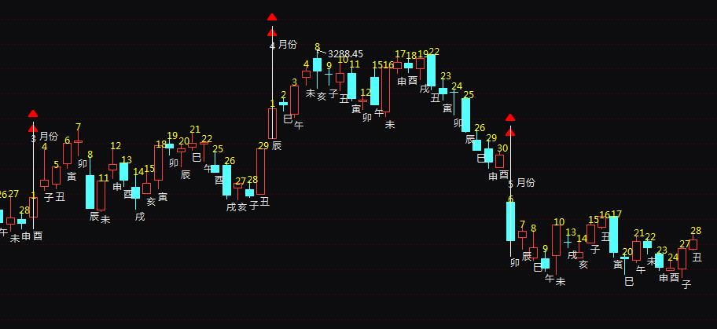
主帖标题: 3.2 上证走势
干支：辛丑年 庚寅月 戊申日 庚申时 （日空：寅卯）
神煞：驿马－寅 桃花－酉 日禄－巳 贵人－丑，未
坤宫：地泽临 艮宫：山泽损
六神 伏神 本 卦 变 卦
朱雀 子孙癸酉金 ▅▅ ▅▅ ╳→ 官鬼丙寅木 ▅▅▅▅▅ 应
青龙 妻财癸亥水 ▅▅ ▅▅ 应 妻财丙子水 ▅▅ ▅▅
玄武 兄弟癸丑土 ▅▅ ▅▅ 兄弟丙戌土 ▅▅ ▅▅
白虎 兄弟丁丑土 ▅▅ ▅▅ 兄弟丁丑土 ▅▅ ▅▅ 世
螣蛇 官鬼丁卯木 ▅▅▅▅▅ 世 官鬼丁卯木 ▅▅▅▅▅
勾陈 父母丁巳火 ▅▅▅▅▅ 父母丁巳火 ▅▅▅▅▅
这个卦看起来明天还是涨。
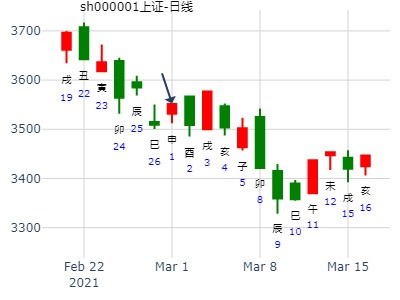
重仓买入国信证券可以赚大钱吗？
时间: 2015-04-07 22时55分
干支: 乙未年庚辰月癸丑日癸亥时 (旬空: 寅卯 )
地泽临 山泽损
六神 伏神 本 卦 变 卦
白虎 ▅▅ ▅▅ 子孙酉金 Ｘ→ ▅▅▅▅▅ 官鬼寅木 应
腾蛇 ▅▅ ▅▅ 妻财亥水 应 ▅▅ ▅▅ 妻财子水
勾陈 ▅▅ ▅▅ 兄弟丑土 ▅▅ ▅▅ 兄弟戌土
朱雀 ▅▅ ▅▅ 兄弟丑土 ▅▅ ▅▅ 兄弟丑土 世
青龙 ▅▅▅▅▅ 官鬼卯木 世 ▅▅▅▅▅ 官鬼卯木
玄武 ▅▅▅▅▅ 父母巳火 ▅▅▅▅▅ 父母巳火
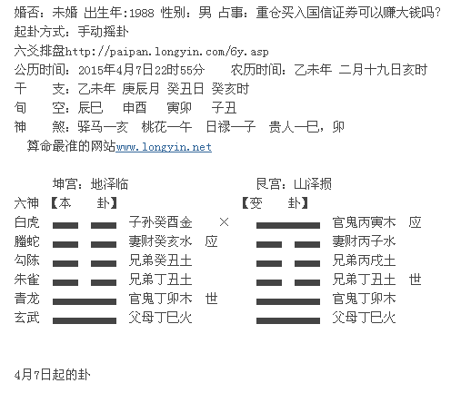
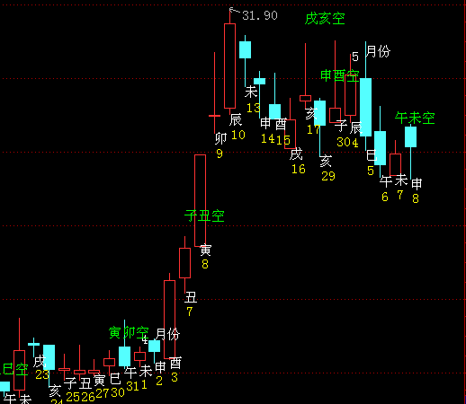
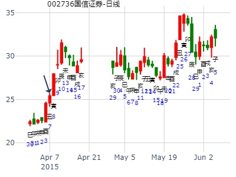
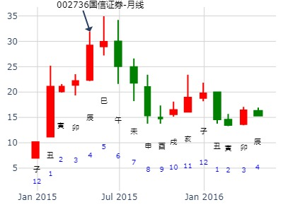
月线则基本到头了，尤其是巳月财破。
临之损，哈投5月份，六爻极位暴跌经典。.md--金玉堂
时间: 2019-04-28 21时7分
干支: 己亥年戊辰月乙未日 (旬空: 辰巳 )
地泽临 山泽损
六神 伏神 本 卦 变 卦
玄武 ▅▅ ▅▅ 子孙酉金 Ｘ→ ▅▅▅▅▅ 官鬼寅木 应
白虎 ▅▅ ▅▅ 妻财亥水 应 ▅▅ ▅▅ 妻财子水
腾蛇 ▅▅ ▅▅ 兄弟丑土 ▅▅ ▅▅ 兄弟戌土
勾陈 ▅▅ ▅▅ 兄弟丑土 ▅▅ ▅▅ 兄弟丑土 世
朱雀 ▅▅▅▅▅ 官鬼卯木 世 ▅▅▅▅▅ 官鬼卯木
青龙 ▅▅▅▅▅ 父母巳火 ▅▅▅▅▅ 父母巳火
2019-04-28
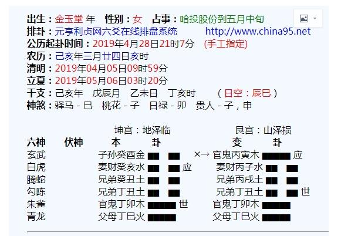
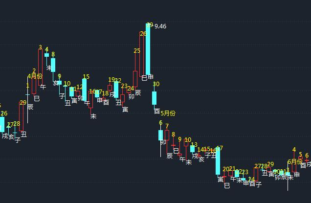
六爻子化鬼直接见顶，不论值日不值日。
主帖标题: 转发“个股卦例及反馈”（二）
占事：4月6日如何走？
排卦：元亨利贞网六爻在线排盘系统 https://www.china95.net
公历起卦时间：2021年4月3日19时43分 (电脑自动)
干支：辛丑年 辛卯月 辛巳日 戊戌时 （日空：申酉）
神煞：驿马－亥 桃花－午 日禄－酉 贵人－寅，午
坤宫：地泽临 艮宫：山泽损
六神 伏神 本 卦 变 卦
螣蛇 子孙癸酉金 ▅▅ ▅▅ ╳→ 官鬼丙寅木 ▅▅▅▅▅ 应
勾陈 妻财癸亥水 ▅▅ ▅▅ 应 妻财丙子水 ▅▅ ▅▅
朱雀 兄弟癸丑土 ▅▅ ▅▅ 兄弟丙戌土 ▅▅ ▅▅
青龙 兄弟丁丑土 ▅▅ ▅▅ 兄弟丁丑土 ▅▅ ▅▅ 世
玄武 官鬼丁卯木 ▅▅▅▅▅ 世 官鬼丁卯木 ▅▅▅▅▅
白虎 父母丁巳火 ▅▅▅▅▅ 父母丁巳火 ▅▅▅▅▅
注：张三汉--转发“个股卦例及反馈”（二）一系列贴没买股票名字，故不配K线图。
主帖标题: [原创]人民币升值传闻另个关键时刻错过5.8再看5.18 ?
以新聞發布時間起盤問5/18人民避會升值否
起卦方式：时间起卦 www.stock99.com 线上排盘系统
公历时间：2005年5月9日1时6分 星期一
农历时间：乙酉年四月初二丑时
干支：乙酉年 辛巳月 癸巳日 癸丑时 (旬空：午未)
神煞：驿马—亥 桃花—午 日禄—子 贵人—卯，巳
坤宫：地泽临 艮宫：山泽损
六神 【本 卦】 【变 卦】
白虎 ▅▅ ▅▅ 子孙癸酉金 ×→ ▅▅▅▅▅ 官鬼丙寅木 应
螣蛇 ▅▅ ▅▅ 妻财癸亥水 应 ▅▅ ▅▅ 妻财丙子水
勾陈 ▅▅ ▅▅ 兄弟癸丑土 ▅▅ ▅▅ 兄弟丙戌土
朱雀 ▅▅ ▅▅ 兄弟丁丑土 ▅▅ ▅▅ 兄弟丁丑土 世
青龙 ▅▅▅▅▅ 官鬼丁卯木 世 ▅▅▅▅▅ 官鬼丁卯木
玄武 ▅▅▅▅▅ 父母丁巳火 ▅▅▅▅▅ 父母丁巳火
上九：弗損益之，無咎，貞吉，利有攸往，得臣無家。象曰：弗損益之，大得志也。
弗損益之 就是既不升值也不貶值 才能無咎
人民币升值传闻另个关键时刻错过5.8再看5.18 ?
http://finance.sina.com.cn 2005年05月09日 01:06 每日经济新闻
赵頔 NBD上海报道
昨日，央行静悄悄，直至截稿，没有任何关于人民币汇率改革的政策宣布，这意味着此前摩根大通关于“人民币汇改5月8日进行”的预测落空。这也将市场的视线转移到了5月18日———中国外汇交易系统扩大交易货币数量之日，同时这也是高盛预测的汇改时机。
4月29日，五一长假前的最后一个交易日，人民币一度升值到8.27，并停留了约20分钟。虽然央行相关发言人表示“这可能是交易商的技术错误”，但分析人士普遍认为，这更象是中国政府对市场的初步试探，而其后的长假也正好可以给政府以充分的时间来准备新汇率政策出台。摩根大通中国区首席经济学家龚方雄还大胆预测，中国将在五一假期尾声，也就是5月8日，松绑维持10年之久的盯住美元汇制。
虽然包括德意志银行在内很多著名的国际金融机构对此并不表示认同，但由于龚方雄曾在去年准确地预测出美元第二季度的走强以及中国10月的升息，因此这次他的言论仍然提升了市场预期。不过，昨日在他的预测落空之后，人们很快地将目光转向了传闻中另外一个人民币升值关键的时刻———5月18日。
从5月18日起，中国将在目前人民币兑美元、欧元、日元和港元4种外币的交易基础上引入8种外币间的汇率交易。高盛此前表示，中国政府将借此机会进行汇率体制的改革，并认为“5·18”是个非常合适的时点。
但是，北京师范大学金融研究中心主任钟伟认为，此次扩大交易货币数量与人民币汇率改革没有必然联系。扩大交易货币数量只是完善外汇市场机制的一个基础性的工作，只有在完善的市场机制下才能有完善的市场价格的存在。本次推出的8个外外币即期交易品种并不涉及到人民币，其报价区间主要是由市场因素而不是由政策来决定。同时，由于外外币即期交易与现存的本外币即期交易间缺少有效的沟通渠道，因此除非做市商能够双重介入，否则人民币即期汇率波动幅度很难被扩大。
5月3日，美联储第8次加息25个基点至3%，市场认为这有助于减轻人民币升值压力。但钟伟指出，由于市场对该信息早已有所消化，因此这种影响实际上已经被弱化。他指出，目前人民币问题已经超出了经济范围，成为各国间政治上的角力。
您认为人民币会否在近期内升值？ 共有90124人参加
选项 比例 票数
1 肯定会 53.92% 2 不会 28.45% 3 不好说 17.62%
主帖标题: 请易经高手解5月11日大盘涨跌卦?
占卜：5月11日大盘涨跌?起卦时间：2007年5月10日15时22分
丁亥年 甲辰月 甲辰日 壬申时 日空亡：寅卯
坤宫：地泽临 艮宫：山泽损
六神 伏神 本 卦 变 卦
玄武 子酉▅▅ ▅▅ ※→ 官寅▅▅▅▅▅应
白虎 妻亥▅▅ ▅▅应 妻子▅▅ ▅▅
腾蛇 兄丑▅▅ ▅▅ 兄戌▅▅ ▅▅
勾陈 兄丑▅▅ ▅▅ 兄丑▅▅ ▅▅世
朱雀 官卯▅▅▅▅▅世 官卯▅▅▅▅▅
青龙 父巳▅▅▅▅▅ 父巳▅▅▅▅▅
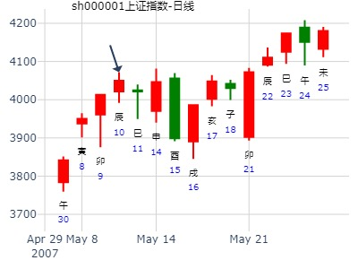
主帖标题: 2019年6月大盘涨跌卦--金眼牛
占事：2019年6月大盘涨跌？
公历起卦时间：2019年5月31日15时45分 (手工指定)
干支：己亥年 己巳月 戊辰日 庚申时 （日空：戌亥）
神煞：驿马－寅 桃花－酉 日禄－巳 贵人－丑，未
坤宫：地泽临 艮宫：山泽损
六神 伏神 本 卦 变 卦
朱雀 子孙癸酉金 ▅▅ ▅▅ ╳→ 官鬼丙寅木 ▅▅▅▅▅ 应
青龙 妻财癸亥水 ▅▅ ▅▅ 应 妻财丙子水 ▅▅ ▅▅
玄武 兄弟癸丑土 ▅▅ ▅▅ 兄弟丙戌土 ▅▅ ▅▅
白虎 兄弟丁丑土 ▅▅ ▅▅ 兄弟丁丑土 ▅▅ ▅▅ 世
腾蛇 官鬼丁卯木 ▅▅▅▅▅ 世 官鬼丁卯木 ▅▅▅▅▅
勾陈 父母丁巳火 ▅▅▅▅▅ 父母丁巳火 ▅▅▅▅▅
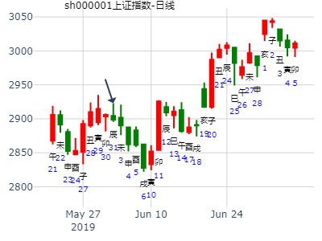
公历：2016年06月16日09时02分 星期四
节气：芒种：06月05日13时48分 夏至：06月21日06时34分
真时：2016年06月16日09时02分 北京 天安门(东经116.38度)
农历：丙申年 五月小 十二日 隅中时分 巳时
干支：丙申 甲午 己巳 己巳 报数起局阳二局
旬空：辰巳 辰巳 戌亥 戌亥 旬首：甲子
值符天芮在三宫 值使死门在七宫 超级奇门排宫法
┌─────────┬─────────┬─────────┐
│丙 螣蛇 │辛 太阴 │癸 六合 │
│ 天柱 癸 │ 天心 壬 │ 天蓬 乙 │
│ 伤门 庚 │ 杜门 丙 │ 景门 戊 禽辛│
│九地 │九天 │值符 │
├─────────┼─────────┼─────────┤
│丁 值符 │乙 │己 白虎 │
│ 天芮 戊 禽辛│ │ 天任 丁 │
│ 生门 己 │ 辛│ 死门 癸 │
│玄武 │ │螣蛇 │
├─────────┼─────────┼─────────┤
│庚 九天 │壬 九地 │戊 玄武○ 马│
│ 天英 丙 │ 天辅 庚 │ 天冲 己 │
│ 休门 丁 │ 开门 乙 │ 惊门 壬 │
│白虎 │六合 │太阴 │
└─────────┴─────────┴─────────┘
干支：丙申年 甲午月 己巳日 己巳时 （日空：戌亥）
神煞：驿马－亥 桃花－午 日禄－午 贵人－子，申
坤宫：地泽临 艮宫：山泽损
六神 伏神 本 卦 变 卦
勾陈 子孙癸酉金 ▅▅ ▅▅ ╳→ 官鬼丙寅木 ▅▅▅▅▅ 应
朱雀 妻财癸亥水 ▅▅ ▅▅ 应 妻财丙子水 ▅▅ ▅▅
青龙 兄弟癸丑土 ▅▅ ▅▅ 兄弟丙戌土 ▅▅ ▅▅
玄武 兄弟丁丑土 ▅▅ ▅▅ 兄弟丁丑土 ▅▅ ▅▅ 世
白虎 官鬼丁卯木 ▅▅▅▅▅ 世 官鬼丁卯木 ▅▅▅▅▅
腾蛇 父母丁巳火 ▅▅▅▅▅ 父母丁巳火 ▅▅▅▅▅
来源: 上证大盘测试局65...
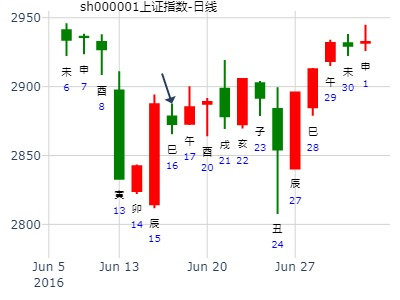
试测2022.6.28二中国A股收盘加权涨幅最大的行业版块？
出生：2022 年 性别：男 占事：没填
排卦：元亨利贞网六爻在线排盘系统 https://www.china95.net
公历起卦时间：2022年6月28日6时25分 (电脑自动)
干支：壬寅年 丙午月 壬子日 癸卯时 （日空：寅卯）
神煞：驿马－寅 桃花－酉 日禄－亥 贵人－卯，巳
坤宫：地泽临 艮宫：山泽损
六神 伏神 本 卦 变 卦
白虎 子孙癸酉金 ▅▅ ▅▅ ╳→ 官鬼丙寅木 ▅▅▅▅▅ 应
螣蛇 妻财癸亥水 ▅▅ ▅▅ 应 妻财丙子水 ▅▅ ▅▅
勾陈 兄弟癸丑土 ▅▅ ▅▅ 兄弟丙戌土 ▅▅ ▅▅
朱雀 兄弟丁丑土 ▅▅ ▅▅ 兄弟丁丑土 ▅▅ ▅▅ 世
青龙 官鬼丁卯木 ▅▅▅▅▅ 世 官鬼丁卯木 ▅▅▅▅▅
玄武 父母丁巳火 ▅▅▅▅▅ 父母丁巳火 ▅▅▅▅▅
《周易》——地泽临 坤上兑下临：元，亨，利，贞。 至于八月有凶。彖曰：临，刚浸而长。 说而顺，刚中而应，大亨以正，天之道也。 至于八月有凶，消不久也。象曰：泽上有地，临； 君子以教思无穷，容保民无疆。上六：敦临，吉无咎。象曰：敦临之吉，志在内也。
六五：知临，大君之宜，吉。象曰：大君之宜，行中之谓也。
六四：至临，无咎。象曰：至临无咎，位当也。
六三：甘临，无攸利。 既忧之，无咎。象曰：甘临，位不当也。 既忧之，咎不长也。
九二：咸临，吉无不利。象曰：咸临，吉无不利；未顺命也。
初九：咸临，贞吉。象曰：咸临贞吉，志行正也。
主帖标题: 2013年8月大盘涨跌卦
占事：2013年8月大盘涨跌？
公历起卦时间：2013年7月31日16时3分 (手工指定)
干支：癸巳年 己未月 戊戌日 庚申时 （日空：辰巳）
神煞：驿马－申 桃花－卯 日禄－巳 贵人－丑，未
坤宫：地泽临 艮宫：山泽损
六神 伏神 本 卦 变 卦
朱雀 子孙癸酉金 ▅▅ ▅▅ ╳→ 官鬼丙寅木 ▅▅▅▅▅ 应
青龙 妻财癸亥水 ▅▅ ▅▅ 应 妻财丙子水 ▅▅ ▅▅
玄武 兄弟癸丑土 ▅▅ ▅▅ 兄弟丙戌土 ▅▅ ▅▅
白虎 兄弟丁丑土 ▅▅ ▅▅ 兄弟丁丑土 ▅▅ ▅▅ 世
腾蛇 官鬼丁卯木 ▅▅▅▅▅ 世 官鬼丁卯木 ▅▅▅▅▅
勾陈 父母丁巳火 ▅▅▅▅▅ 父母丁巳火 ▅▅▅▅▅
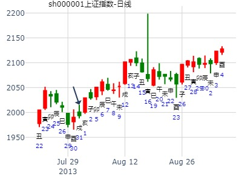
九戒：焦煤1501 722
公历时间：2014年7月21日14时52分
干 支：甲午年 辛未月 癸巳日 己未时
旬 空：辰巳 戌亥 (午未) 子丑
坤宫：地泽临 艮宫：山泽损
六神 【本 卦】 【变 卦】
白虎 ▄▄ ▄▄ 子孙癸酉金 X-> ▄▄▄▄▄ 官鬼丙寅木 应
螣蛇 ▄▄ ▄▄ 妻财癸亥水 应 ▄▄ ▄▄ 妻财丙子水
勾陈 ▄▄ ▄▄ 兄弟癸丑土 ▄▄ ▄▄ 兄弟丙戌土
朱雀 ▄▄ ▄▄ 兄弟丁丑土 ▄▄ ▄▄ 兄弟丁丑土 世
青龙 ▄▄▄▄▄ 官鬼丁卯木 世 ▄▄▄▄▄ 官鬼丁卯木
玄武 ▄▄▄▄▄ 父母丁巳火 ▄▄▄▄▄ 父母丁巳火
上六：敦临，吉无咎。
象曰：敦临之吉，志在内也。
应爻亥水日破。
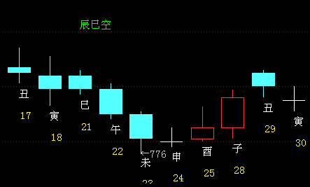
“每日一卦测大盘”—— 2014年8月12日周二走势。
公历起卦时间：2014年8月11日20时31分
干支：甲午年 壬申月 甲寅日 甲戌时 （日空：子丑）
坤宫：地泽临 艮宫：山泽损
六神 伏神 本 卦 变 卦
玄武 子孙癸酉金 ▅▅ ▅▅ ╳→ 官鬼丙寅木 ▅▅▅▅▅ 应
白虎 妻财癸亥水 ▅▅ ▅▅ 应 妻财丙子水 ▅▅ ▅▅
腾蛇 兄弟癸丑土 ▅▅ ▅▅ 兄弟丙戌土 ▅▅ ▅▅
勾陈 兄弟丁丑土 ▅▅ ▅▅ 兄弟丁丑土 ▅▅ ▅▅ 世
朱雀 官鬼丁卯木 ▅▅▅▅▅ 世 官鬼丁卯木 ▅▅▅▅▅
青龙 父母丁巳火 ▅▅▅▅▅ 父母丁巳火 ▅▅▅▅▅ |
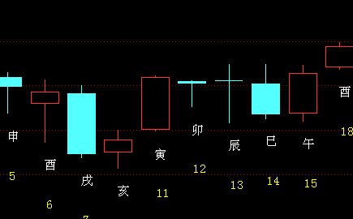
临之损。金山办公8月-10月。何远致
时间: 2022-08-04 13时52分
干支: 壬寅年丁未月己丑日 (旬空: 午未 )
地泽临 山泽损
六神 伏神 本 卦 变 卦
勾陈 ▅▅ ▅▅ 子孙酉金 Ｘ→ ▅▅▅▅▅ 官鬼寅木 应
朱雀 ▅▅ ▅▅ 妻财亥水 应 ▅▅ ▅▅ 妻财子水
青龙 ▅▅ ▅▅ 兄弟丑土 ▅▅ ▅▅ 兄弟戌土
玄武 ▅▅ ▅▅ 兄弟丑土 ▅▅ ▅▅ 兄弟丑土 世
白虎 ▅▅▅▅▅ 官鬼卯木 世 ▅▅▅▅▅ 官鬼卯木
腾蛇 ▅▅▅▅▅ 父母巳火 ▅▅▅▅▅ 父母巳火
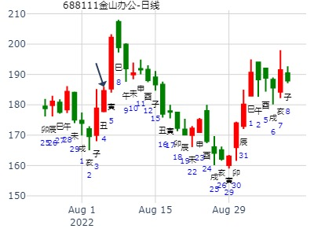
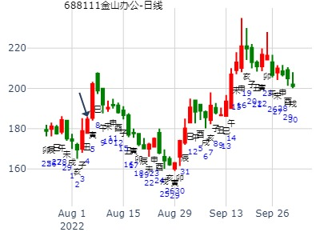
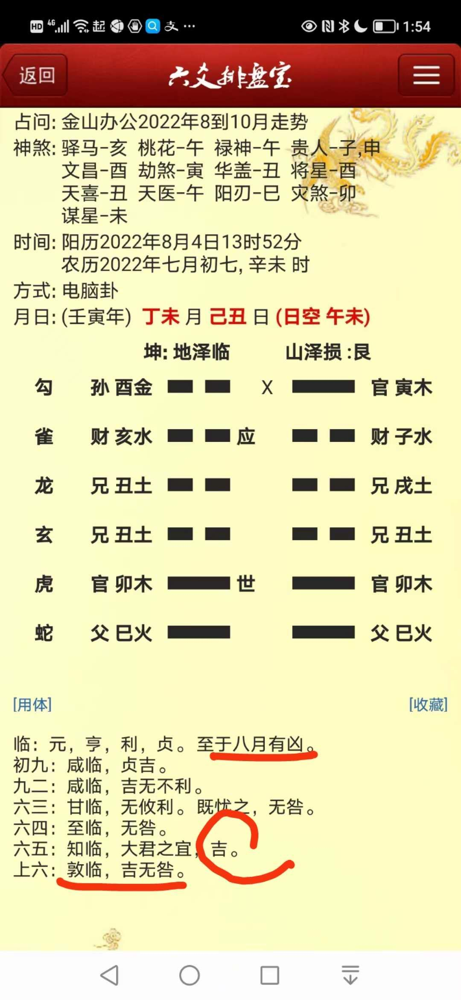
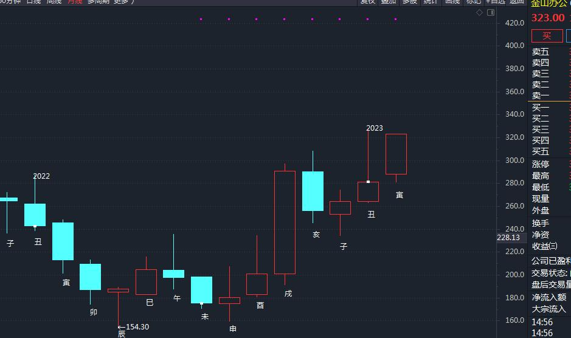
主帖标题: 这有个票，未来可上一百！不喜勿喷，可关注
壬寅 戊申 甲寅 己巳 (子丑空) 壬寅年七月初二(2022/08/29 09:25:02)
地泽临 山泽损
玄武 子孙酉金 × 官鬼寅木 ／ 应
白虎 妻财癸亥 ∥ 应 妻财子水 ∥
腾蛇 兄弟丑土 ∥ 兄弟丙戌 ∥
勾陈 兄弟丑土 ∥ 兄弟丑土 ∥ 世
朱雀 官鬼卯木 ／ 世 官鬼卯木 ／
青龙 父母巳火 ／ 父母巳火 ／
开盘卦 子孙为空头 主力空亡
不有效上破64元就没戏
占事：10.17-21大盘
起卦方式：手动摇卦 壬申癸酉甲戌已亥丙子
六爻排盘http://paipan.9d19.com/6y.asp
公历时间：2016年10月17日9时30分 农历时间：丙申年 九月十七日巳时
干 支：丙申年 戊戌月 壬申日 乙巳时
旬 空：辰巳 辰巳 戌亥 寅卯
神 煞：驿马─寅 桃花─酉 日禄─亥 贵人─巳，卯
算命最准的网站www.9d19.com
坤宫：地泽临 艮宫：山泽损
六神 【本 卦】 【变 卦】
白虎 ▄▄ ▄▄ 子孙癸酉金 × ▄▄▄▄▄ 官鬼丙寅木 应
螣蛇 ▄▄ ▄▄ 妻财癸亥水 应 ▄▄ ▄▄ 妻财丙子水
勾陈 ▄▄ ▄▄ 兄弟癸丑土 ▄▄ ▄▄ 兄弟丙戌土
朱雀 ▄▄ ▄▄ 兄弟丁丑土 ▄▄ ▄▄ 兄弟丁丑土 世
青龙 ▄▄▄▄▄ 官鬼丁卯木 世 ▄▄▄▄▄ 官鬼丁卯木
玄武 ▄▄▄▄▄ 父母丁巳火 ▄▄▄▄▄ 父母丁巳火
周一涨周二跌周三跌周四涨周五涨周收盘3050
纳甲六爻在线排盘-婚否： 出生年:1971 性别：女
占事：10.17-21大盘
起卦方式：手动摇卦
公历时间：2016年10月17日9时30分
干 支：丙申年 戊戌月 壬申日 乙巳时
旬 空：辰巳 辰巳 戌亥 寅卯
坤宫：地泽临 艮宫：山泽损
六神 【本 卦】 【变 卦】
白虎 ▄▄ ▄▄ 子孙癸酉金 × ▄▄▄▄▄ 官鬼丙寅木 应
螣蛇 ▄▄ ▄▄ 妻财癸亥水 应 ▄▄ ▄▄ 妻财丙子水
勾陈 ▄▄ ▄▄ 兄弟癸丑土 ▄▄ ▄▄ 兄弟丙戌土
朱雀 ▄▄ ▄▄ 兄弟丁丑土 ▄▄ ▄▄ 兄弟丁丑土 世
青龙 ▄▄▄▄▄ 官鬼丁卯木 世 ▄▄▄▄▄ 官鬼丁卯木
玄武 ▄▄▄▄▄ 父母丁巳火 ▄▄▄▄▄ 父母丁巳火
周一涨周二跌周三跌周四涨周五涨周收盘3050
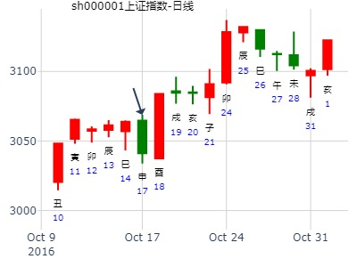
主帖标题: 丑妇终须见家翁——上证指数每天预测实战
公历：2015年11月17日9时30分，星期二。
干支：乙未年 丁亥月 丁酉日 乙巳时 (卦身：未)
主变卦 地泽临(坤宫) 之 山泽损(艮宫) [空亡:辰、巳]
青龙 ▅▅ ▅▅×子孙癸酉金 ▅▅▅▅▅ 官鬼丙寅木 应
玄武 ▅▅ ▅▅ 妻财癸亥水 应 ▅▅ ▅▅ 妻财丙子水
白虎 ▅▅ ▅▅ 兄弟癸丑土 ▅▅ ▅▅ 兄弟丙戌土
螣蛇 ▅▅ ▅▅ 兄弟丁丑土 ▅▅ ▅▅ 兄弟丁丑土 世
勾陈 ▅▅▅▅▅ 官鬼丁卯木 世 ▅▅▅▅▅ 官鬼丁卯木
朱雀 ▅▅▅▅▅ 父母丁巳火 ▅▅▅▅▅ 父母丁巳火
11月17日，星期二。
预测: 跌!

主帖标题: b测上证今天11.17走势？
求测人：某人，男，庚申(1980年)，自动起卦(起卦方式)
占问事宜：测上证今天11.17走势？b
公历：2016年11月17日10时9分，星期四。
神煞：驿马-巳 桃花-子 干禄-子 贵人-卯、巳
干支：丙申年 己亥月 癸卯日 丁巳时[size=14.6667px] (卦身：未)
主变卦 地泽临(坤宫) 之 山泽损(艮宫) [空亡:辰、巳]
白虎 ▅▅ ▅▅×子孙癸酉金 ▅▅▅▅▅ 官鬼丙寅木 应
滕蛇 ▅▅ ▅▅ 妻财癸亥水 应 ▅▅ ▅▅ 妻财丙子水
勾陈 ▅▅ ▅▅ 兄弟癸丑土 ▅▅ ▅▅ 兄弟丙戌土
朱雀 ▅▅ ▅▅ 兄弟丁丑土 ▅▅ ▅▅ 兄弟丁丑土 世
青龙 ▅▅▅▅▅ 官鬼丁卯木 世 ▅▅▅▅▅ 官鬼丁卯木
玄武 ▅▅▅▅▅ 父母丁巳火 ▅▅▅▅▅ 父母丁巳火
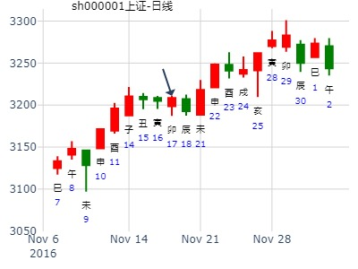
主帖标题: 提供一只股票
张三汉 发表于 2019-11-14 15:03
今天收获这样大了。新发现了。
坤宫：地泽临 艮宫：山泽损
六神 伏神 本 卦 变 卦
玄武 子孙癸酉金 ▅▅ ▅▅ ╳→ 官鬼丙寅木 ▅▅▅▅▅ 应
白虎 妻财癸亥水 ▅▅ ▅▅ 应 妻财丙子水 ▅▅ ▅▅
腾蛇 兄弟癸丑土 ▅▅ ▅▅ 兄弟丙戌土 ▅▅ ▅▅
勾陈 兄弟丁丑土 ▅▅ ▅▅ 兄弟丁丑土 ▅▅ ▅▅ 世
朱雀 官鬼丁卯木 ▅▅▅▅▅ 世 官鬼丁卯木 ▅▅▅▅▅
青龙 父母丁巳火 ▅▅▅▅▅ 父母丁巳火 ▅▅▅▅▅
坤为地 山地剥
玄武 子孙酉金 × 世 官鬼寅木 ／
白虎 妻财亥水 ∥ 妻财子水 ∥ 世
腾蛇 兄弟丑土 ∥ 兄弟戌土 ∥
勾陈 官鬼卯木 ∥ 应 官鬼卯木 ∥
朱雀 父母巳火 ∥ 父母巳火 ∥ 应
青龙 兄弟未土 ∥ 兄弟未土 ∥
主帖标题: 两个卦象
公历起卦时间：2019年11月14日1时33分 (按农历时间起卦)
农历：己亥年十月十八日丑时
立冬：2019年11月08日02时42分
大雪：2019年12月07日19时20分
干支：己亥年 乙亥月 乙卯日 丁丑时 （日空：子丑）
神煞：驿马－巳 桃花－子 日禄－卯 贵人－子，申
坤宫：地泽临 艮宫：山泽损
六神 伏神 本 卦 变 卦
玄武 子孙癸酉金 ▅▅ ▅▅ ╳→ 官鬼丙寅木 ▅▅▅▅▅ 应
白虎 妻财癸亥水 ▅▅ ▅▅ 应 妻财丙子水 ▅▅ ▅▅
腾蛇 兄弟癸丑土 ▅▅ ▅▅ 兄弟丙戌土 ▅▅ ▅▅
勾陈 兄弟丁丑土 ▅▅ ▅▅ 兄弟丁丑土 ▅▅ ▅▅ 世
朱雀 官鬼丁卯木 ▅▅▅▅▅ 世 官鬼丁卯木 ▅▅▅▅▅
青龙 父母丁巳火 ▅▅▅▅▅ 父母丁巳火 ▅▅▅▅▅
3002XX
上六：敦临，吉无咎。象曰：敦临之吉，志在内也。
六爻：子孙生财。
公历起卦时间：2019年11月14日0时37分 (按农历时间起卦)
农历：己亥年十月十八日子时
立冬：2019年11月08日02时42分
大雪：2019年12月07日19时20分
干支：己亥年 乙亥月 乙卯日 丙子时 （日空：子丑）
神煞：驿马－巳 桃花－子 日禄－卯 贵人－子，申
坤宫：地天泰 (六合) 坤宫：水天需 (游魂)
六神 伏神 本 卦 变 卦
玄武 子孙癸酉金 ▅▅ ▅▅ 应 妻财戊子水 ▅▅ ▅▅
白虎 妻财癸亥水 ▅▅ ▅▅ ╳→ 兄弟戊戌土 ▅▅▅▅▅
腾蛇 兄弟癸丑土 ▅▅ ▅▅ 子孙戊申金 ▅▅ ▅▅ 世
勾陈 兄弟甲辰土 ▅▅▅▅▅ 世 兄弟甲辰土 ▅▅▅▅▅
朱雀 父母乙巳火 官鬼甲寅木 ▅▅▅▅▅ 官鬼甲寅木 ▅▅▅▅▅
青龙 妻财甲子水 ▅▅▅▅▅ 妻财甲子水 ▅▅▅▅▅ 应
6007XX
六五：帝乙归妹，以祉元吉。象曰：以祉元吉，中以行愿也。
六爻：卯日孙动生财。
主帖标题: 601168 西部矿业下周涨跌
公历时间：2019年12月20日16时38分
干 支：己亥年 丙子月 辛卯日 丙申时
旬 空：辰巳 申酉 午未 辰巳
神 煞：驿马─巳 桃花─子 日禄─酉 贵人─寅，午
中国预测网纳甲六爻排盘
坤宫：地泽临 艮宫：山泽损
六神 【本 卦】 【变 卦】
螣蛇 ▄▄ ▄▄ 子孙癸酉金 × ▄▄▄▄▄ 官鬼丙寅木 应
勾陈 ▄▄ ▄▄ 妻财癸亥水 应 ▄▄ ▄▄ 妻财丙子水
朱雀 ▄▄ ▄▄ 兄弟癸丑土 ▄▄ ▄▄ 兄弟丙戌土
青龙 ▄▄ ▄▄ 兄弟丁丑土 ▄▄ ▄▄ 兄弟丁丑土 世
玄武 ▄▄▄▄▄ 官鬼丁卯木 世 ▄▄▄▄▄ 官鬼丁卯木
白虎 ▄▄▄▄▄ 父母丁巳火 ▄▄▄▄▄ 父母丁巳火
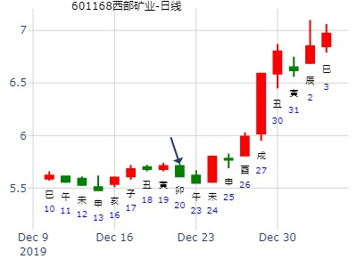
上证12月-风生水起
时间: 2024-12-04 08:38
干支: 甲辰年乙亥月壬寅日甲辰时 (旬空: 辰巳 )
地泽临 山泽损
六神 伏神 本 卦 变 卦
白虎 ▅▅ ▅▅ 子孙酉金 Ｘ→ ▅▅▅▅▅ 官鬼寅木 应
腾蛇 ▅▅ ▅▅ 妻财亥水 应 ▅▅ ▅▅ 妻财子水
勾陈 ▅▅ ▅▅ 兄弟丑土 ▅▅ ▅▅ 兄弟戌土
朱雀 ▅▅ ▅▅ 兄弟丑土 ▅▅ ▅▅ 兄弟丑土 世
青龙 ▅▅▅▅▅ 官鬼卯木 世 ▅▅▅▅▅ 官鬼卯木
玄武 ▅▅▅▅▅ 父母巳火 ▅▅▅▅▅ 父母巳火
上六：敦临，吉无咎。